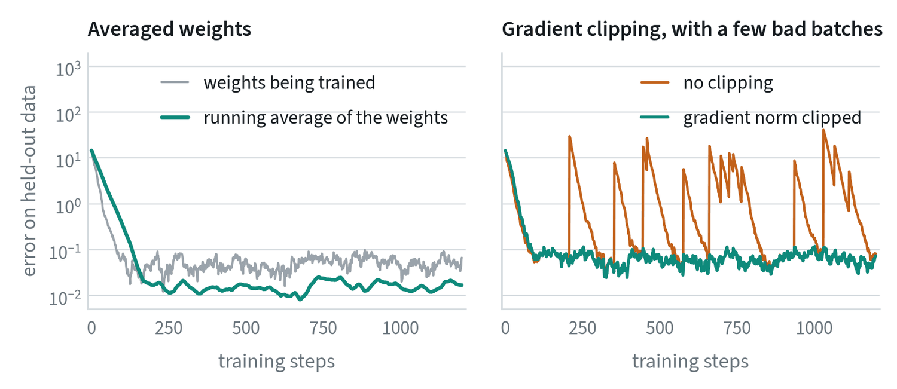

A recipe for training neural networks
Andrej Karpathy’s 2019 recipe is still the best checklist for starting a training project. Its lesson is the ordering: build up from something simple that works, and never start with the full system.

- Know the data. Look at hundreds of samples. Find the duplicates, the bad labels and the imbalance before the model does.
- Build the skeleton and a baseline. Set up the full training and evaluation loop with a tiny model. Fix the random seed, and check that the loss at the very start is what you would expect from chance.
- Overfit. Make the model big enough to memorise the training set. If it cannot, there is a bug.
- Regularise. Add data first. Then add augmentation, dropout and weight decay, trading some training loss for validation loss.
- Tune. Search the learning rate and a few key settings, one at a time, and train to convergence.
The engineering around a run
Large training runs are software projects. Six practices keep them fast, comparable and recoverable.
| Practice | What it is | Watch for |
|---|---|---|
| Mixed precision | Compute in 16-bit numbers and keep the sensitive parts in 32-bit. Roughly halves memory. | Overflow and NaNs |
| Distributed training | Split each batch across several GPUs for a shorter wall-clock time. | Data loading becomes the bottleneck |
| Experiment tracking | Log every run: configuration, code version, metrics and sample outputs. | Run names you cannot decode in a year |
| Pinned configurations | Set every hyperparameter explicitly and compare the full configuration with the reference run before launch. | Defaults that changed between code versions |
| Checkpointing | Save the model, optimizer and step regularly, and keep the best checkpoint by validation score. | A resumed run that differs from an uninterrupted one |
| Convergence | A run is done when the validation curve has flattened. | A curve that flattened only because the learning rate reached zero |
The configuration row deserves emphasis. The most common way an experiment silently changes two things at once is a default that moved. A result you cannot reproduce or compare is not a result.
Two small additions that prevent large failures


- Averaged weights (EMA). Keep a second copy of the model that is a slow running average of the trained weights, and evaluate and deploy that copy. It filters out step-to-step noise. In the run above its error is about a third of the raw weights’. It is standard for diffusion and flow-matching policies, where it makes a visible difference to the motion.
- Gradient clipping. If a batch produces an unusually large gradient, scale it down to a fixed size before the update. One bad batch then costs one ordinary step. In the run above, an unclipped bad batch raised the error several hundredfold and took a hundred steps to recover from.
Batch size, learning rate and the data loader
A larger batch gives a less noisy gradient, which permits a larger learning rate. A common starting rule is to scale the two together. When the batch you want does not fit in memory, gradient accumulation adds up the gradients of several small batches before each update. It gives the same result and takes longer.
In robot learning the slow part is often not the GPU. Decoding video and resizing images on the CPU can leave the GPU idle most of the time. Check GPU utilisation first. If it is low, add loader workers, decode at a lower resolution, or pre-compute and cache what does not change.
When the loss becomes NaN
NaN means “not a number”: some value overflowed or an impossible operation was attempted, and it has spread to everything. Work through the causes in order of likelihood.
| Check | What to look for |
|---|---|
| The learning rate | Halve it. If the problem goes away, it was too high, or the warmup was too short. |
| The data | NaN or infinite values in the inputs; actions that were never normalised; a division by a zero spread in the normalisation. |
| Mixed precision | Switch it off. If the run survives, a value overflowed in 16 bits. |
| The first bad step | Log the gradient size every step and find where it jumps. Inspect that batch. |
| The loss itself | A logarithm of zero or a division by a very small number. |
Common mistakes
- Starting with the full system. When it fails, there are too many places to look.
- Changing several things at once. The result cannot then be attributed to any of them.
- Declaring victory at the step limit. Check the curve, not the counter.
- Evaluating the raw weights of a diffusion policy. Use the averaged copy.
Terms
- Seed
- The number that fixes the random choices in a run, so it can be repeated.
- Checkpoint
- A saved copy of the model partway through training.
- Hyperparameter
- A setting chosen by you, not learned by the model.
- Convergence
- The point where more training no longer improves the validation metric.
- EMA weights
- A slow running average of the model’s weights, used for evaluation and deployment.
- Gradient clipping
- Scaling down a gradient that exceeds a set size.
- Gradient accumulation
- Summing gradients over several small batches before one update.